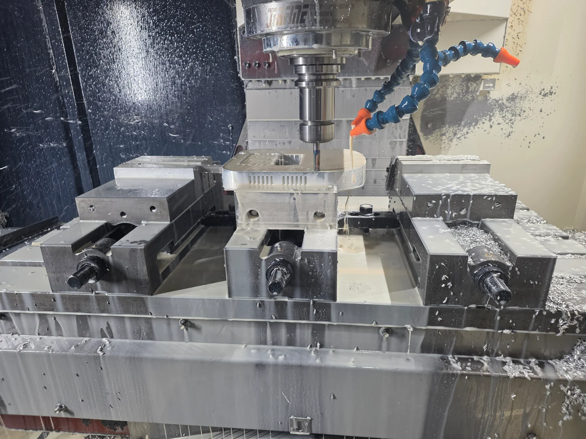
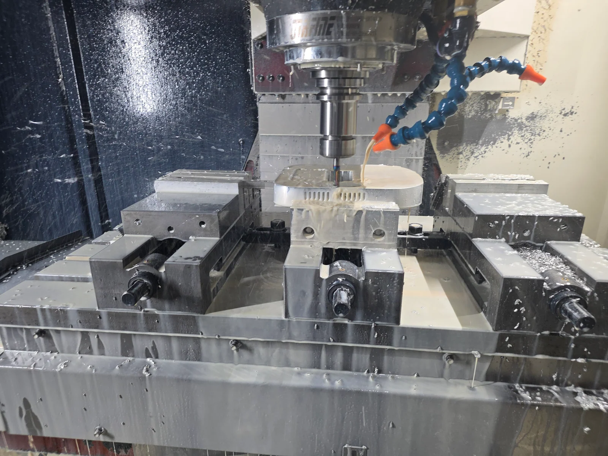

One part.More than one angle.
CNC milling, turning and 5-axis machining in Hangzhou.
A closer look at tool access and workholding.


Metal and plastic · From 1 piece · Prototypes to small batches
CNC milling, turning and 5-axis machining in Hangzhou.
A closer look at tool access and workholding.


Metal and plastic · From 1 piece · Prototypes to small batches